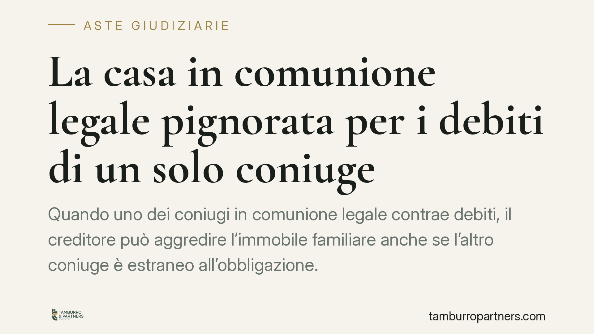

La casa in comunione legale pignorata per i debiti di un solo coniuge
Quando uno dei coniugi in comunione legale contrae debiti, il creditore può aggredire l'immobile familiare anche se l'altro coniuge è estraneo all'obbligazione. La comunione legale, priva di quote determinate, impone regole particolari sul pignoramento e sul riparto del ricavato. Vediamo cosa rischia il coniuge non debitore e quali tutele restano concretamente utilizzabili.

Il nodo: comunione legale senza quote
Nella comunione legale dei beni (artt. 177 e seguenti del Codice civile) i beni acquistati dopo il matrimonio appartengono a entrambi i coniugi, ma senza quote determinate. Non esiste, cioè, una metà giuridicamente separata e autonomamente aggredibile: la contitolarità è "a mani riunite".
Questa caratteristica ha una conseguenza processuale precisa. Il creditore di un solo coniuge non può pignorare la "metà" dell'immobile, perché quella metà non esiste come oggetto autonomo. Deve pignorare l'intero bene, salvo poi soddisfarsi solo sulla parte di ricavato riferibile al coniuge debitore. Il coniuge non debitore ha diritto a percepire la restante quota del prezzo di vendita.
Il quadro normativo: debiti personali e responsabilità sussidiaria
Occorre distinguere le obbligazioni. Per i debiti contratti nell'interesse della famiglia rispondono i beni della comunione (art. 186 c.c.). Diverso è il caso dei debiti personali di un coniuge, cioè non riconducibili ai bisogni familiari.
Qui interviene l'art. 189, comma 2, c.c.: i beni della comunione rispondono delle obbligazioni personali di un coniuge, ma solo in via sussidiaria e fino al valore corrispondente alla quota del coniuge obbligato, quando i creditori non abbiano potuto soddisfarsi sui beni personali. Va tenuto distinto l'art. 190 c.c., che disciplina la responsabilità sussidiaria dei coniugi con i propri beni personali per le obbligazioni gravanti sulla comunione.
La giurisprudenza di legittimità ha riconosciuto, in tema di comunione legale, la pignorabilità dell'intero immobile con soddisfazione del creditore limitata al ricavato riferibile alla posizione del coniuge debitore. Gli estremi esatti della pronuncia richiamata dalla fonte (Cassazione civile, Sez. 3) sono da verificare puntualmente prima di ogni utilizzo processuale.
Il beneficio di escussione: una tutela non pacifica
Al coniuge non debitore viene spesso attribuito un onere di preventiva escussione dei beni personali del debitore prima di aggredire la comunione. È bene precisare che natura, portata e limiti di questa tutela non sono pacifici in giurisprudenza. La formulazione dell'art. 189 c.c. suggerisce un carattere sussidiario dell'aggressione dei beni comuni, ma l'applicazione concreta è controversa. Chi intende farla valere deve verificarne la sostenibilità nel caso specifico.
Separazione dei beni tardiva e limiti temporali
Una reazione frequente è tentare di sottrarre l'immobile al creditore modificando il regime patrimoniale o disponendo del bene. Qui il fattore decisivo è il tempo.
Gli atti di disposizione anteriori al pignoramento possono essere resi inefficaci verso il creditore tramite l'azione revocatoria (art. 2901 c.c.), con onere di provare i presupposti soggettivi e oggettivi.
Gli atti compiuti dopo la trascrizione del pignoramento sono invece inefficaci verso il creditore procedente ai sensi dell'art. 2913 c.c., senza necessità di alcuna azione: l'inefficacia opera automaticamente. La separazione dei beni decisa a pignoramento già trascritto non produce quindi effetti utili contro chi ha già iscritto il vincolo.
Implicazioni pratiche per il coniuge non debitore
Il coniuge estraneo al debito non è un semplice spettatore. Può subire la vendita dell'intero immobile, ma conserva il diritto alla parte del ricavato non aggredibile dal creditore. Deve però attivarsi tempestivamente per far valere le proprie ragioni, sia sul riparto del prezzo sia sulla contestazione dei presupposti dell'esecuzione.
Cosa fare in concreto
- Verifica il regime patrimoniale effettivo e la data della sua eventuale modifica: un cambio successivo alla trascrizione del pignoramento è inefficace ex art. 2913 c.c.
- Ricostruisci la natura del debito: distinguere obbligazione personale (art. 189 c.c.) da obbligazione familiare (art. 186 c.c.) cambia il perimetro dell'aggressione.
- Controlla nella procedura esecutiva la corretta imputazione del ricavato, per tutelare la parte spettante al coniuge non debitore.
- Valuta la sostenibilità di eventuali eccezioni sulla preventiva escussione dei beni personali del debitore, tenendo conto dell'orientamento non uniforme.
- Un esame preventivo della situazione patrimoniale, quando uno dei coniugi assume esposizioni rilevanti, consente di valutare le tutele finché sono ancora efficaci.
Contributo informativo a cura di Tamburro & Partners Avvocati. Non costituisce parere legale.
Comprare bene all’asta si può.
Se vuoi acquistare un immobile all’asta in sicurezza o difendere un esecutato, scrivi allo studio. Ti rispondiamo entro un giorno lavorativo.